BBD · White-label banking solution
Soldibank
Designing the customer app and the staff workflows behind a bank-in-a-box solution.
Customer · mobile app
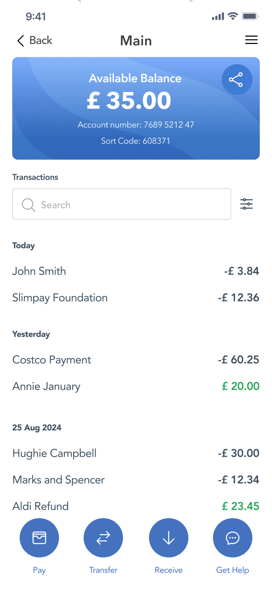
Staff · Vanguard
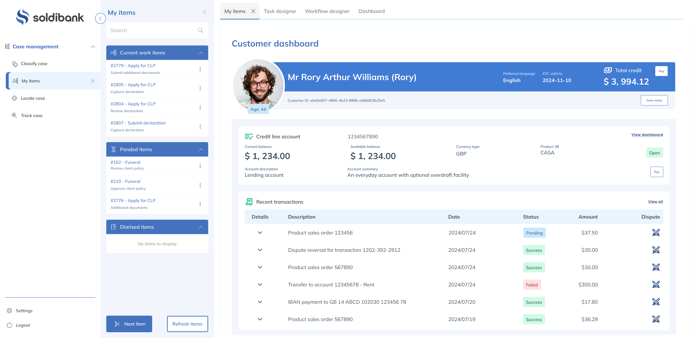
Overview
Soldibank was BBD’s proposition for a reusable banking solution that could be demonstrated to smaller banks, customers and partners. I designed the proposed mobile experience alongside Vanguard-based staff workflows, considering how customers and bank staff would interact with the services on either side.
A reusable banking proposition, with two distinct audiences
The aim was to bring together customer-facing banking services, Vanguard workflows and integrations such as Thought Machine into a bank-in-a-box proposition for smaller banks.
My design scope covered both the standalone mobile app and the Vanguard-based staff experience. Customers needed to navigate tasks such as account setup, identity verification and payments. Staff needed the information and controls to manage the processes supporting those services.
Customers
Standalone mobile appAccount setup, identity verification, account views and paymentsBank staff
Vanguard workflowsCustomer views, verification exceptions, disputes and money transfersMaking banking tasks manageable on mobile
I developed wireframes and visual designs for account setup, identity verification, account views and money movement. The designs covered the steps within these journeys, including input, review, confirmation and recovery states.
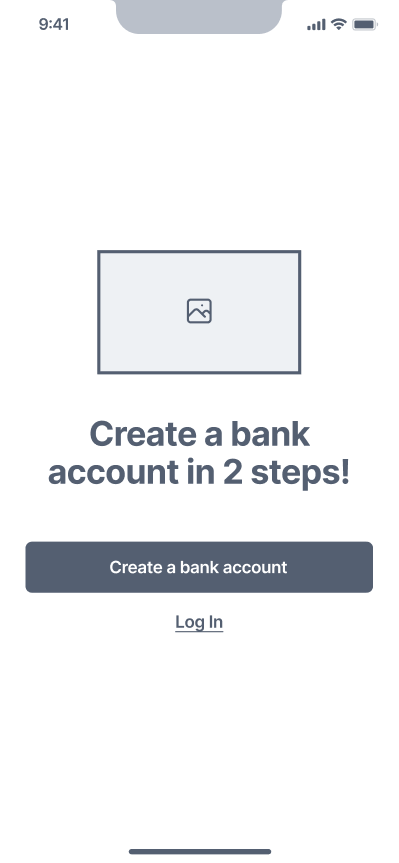
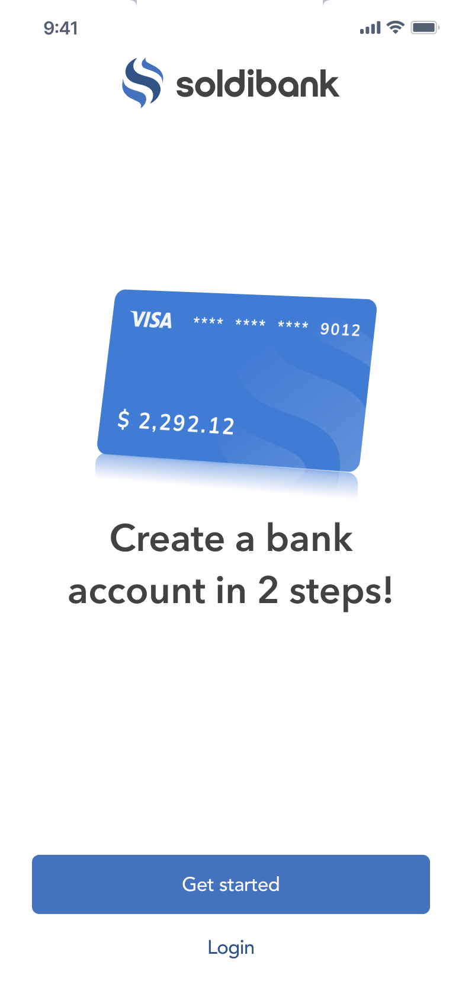
Account setup: the start screen, from wireframe to visual design.
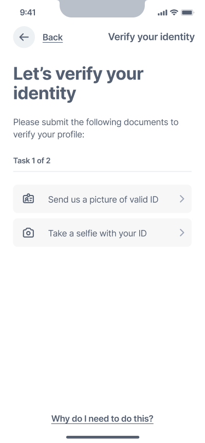
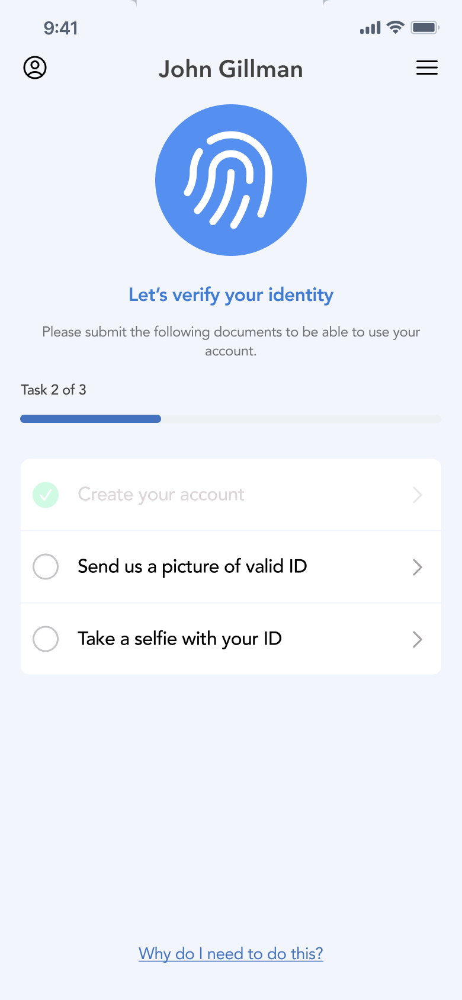
Identity verification: two tasks, a picture of valid ID and a selfie.
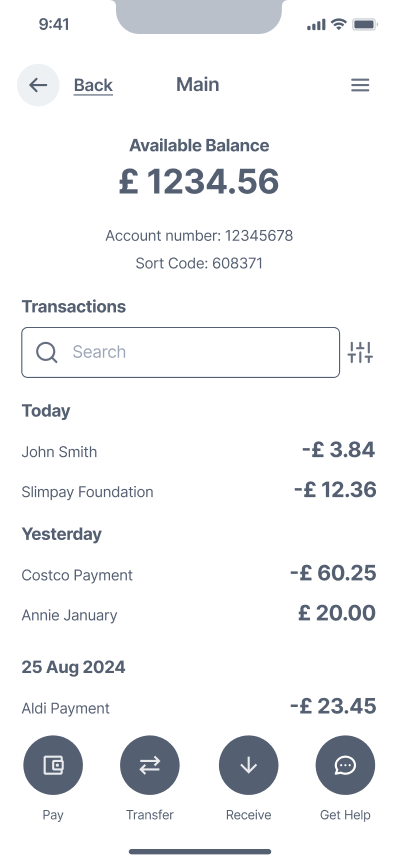
Account overview: balance, account details and recent transactions.
One payment, from amount to confirmation
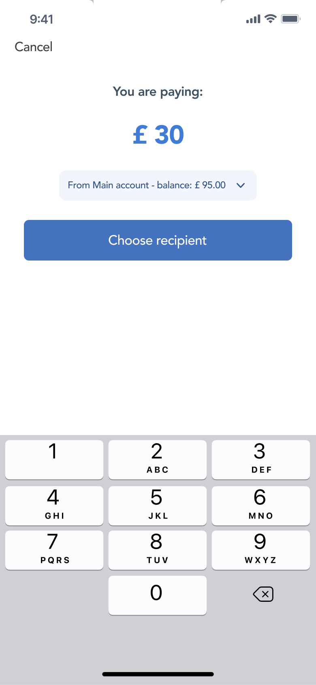
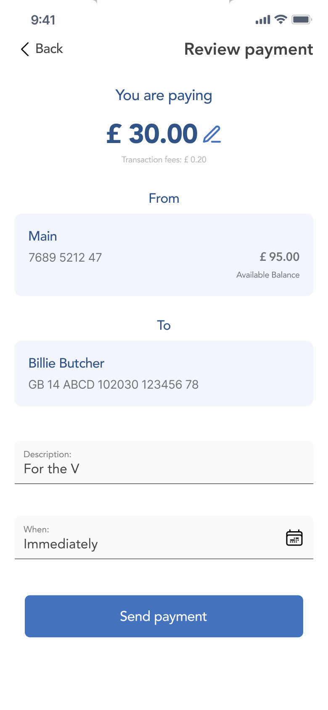
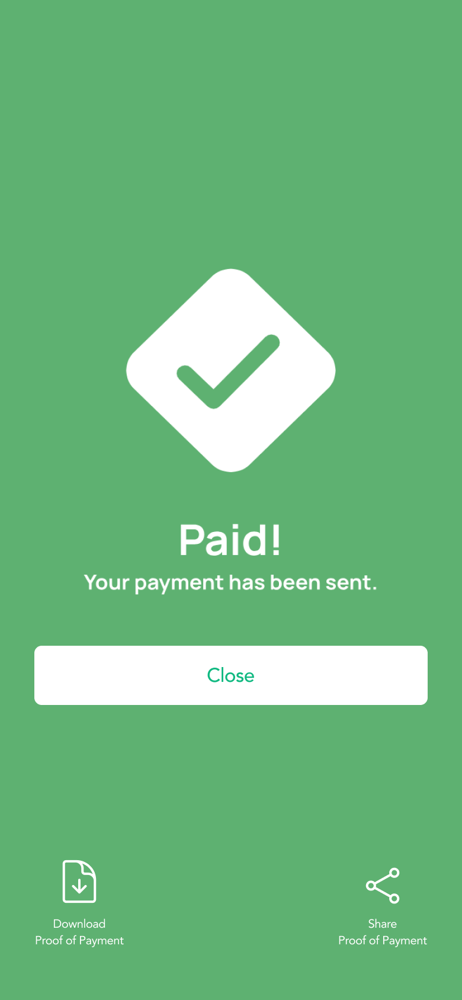
Considering what happens when verification needs attention
The verification designs explored both customer submission and staff review. Customer screens covered document and selfie capture, while Vanguard screens supported reviewing identity information and comparing images. A re-upload state explained that there was a problem with the identification and showed which documents needed to be submitted again.
Related customer and staff designs, not a live end-to-end sequence.
1 · Customer: capturing documents
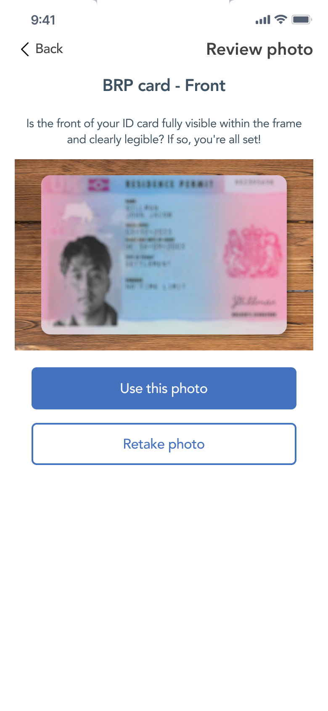
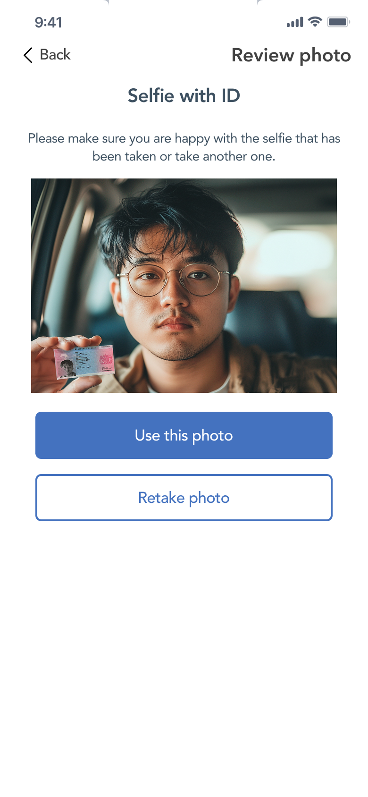
2 · Staff: reviewing a verification exception
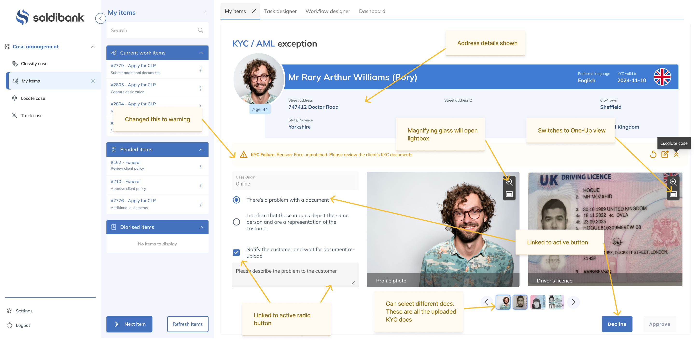
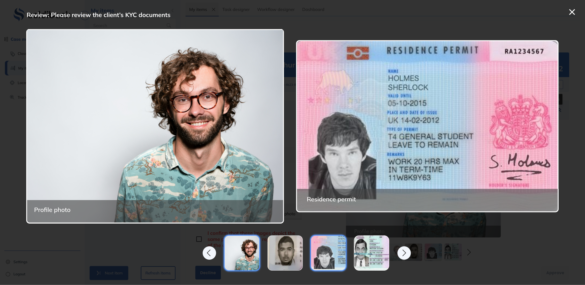
3 · Customer: re-uploading documents

Working within Vanguard and alongside Thought Machine
I designed staff-facing screens within the Vanguard environment and adapted their visual theme to fit alongside Thought Machine. The work included customer views, verification exceptions, transaction disputes and money-transfer workflows.
The challenge was to support the task at hand while working within the existing platform structure and creating a coherent visual experience across the proposition.
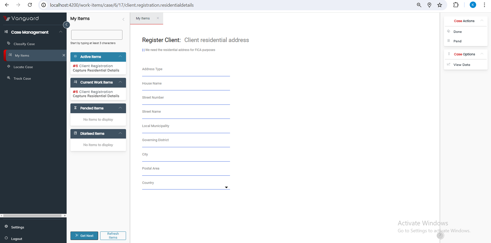
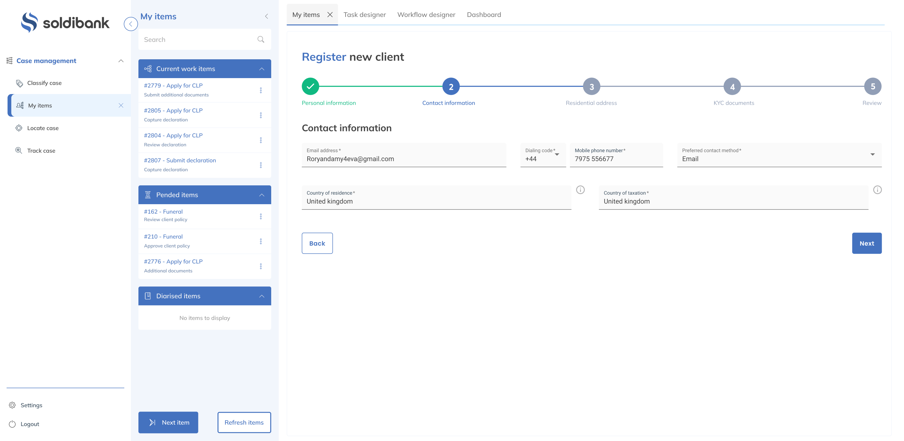
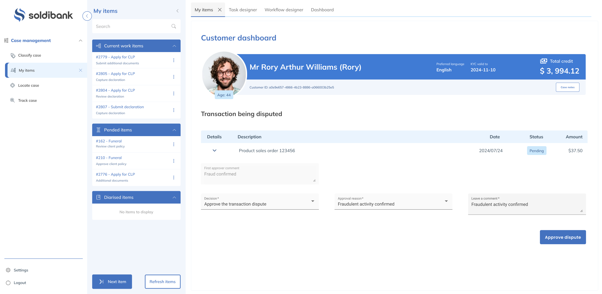
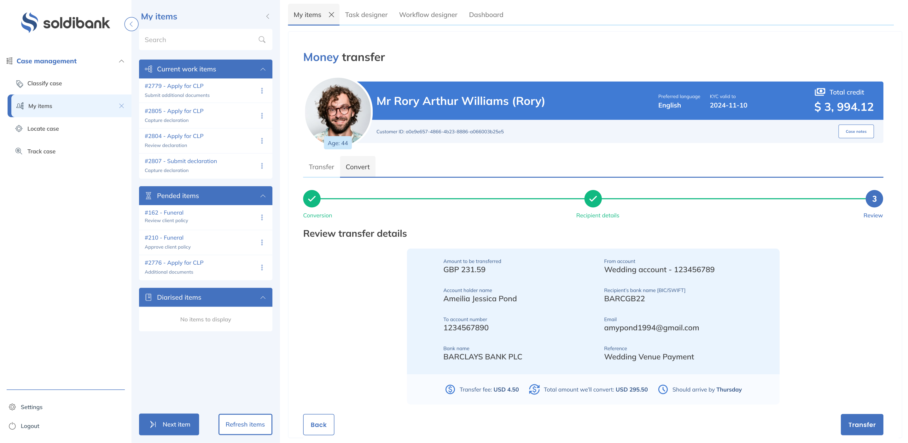
A connected foundation and a designed mobile experience
Vanguard and Thought Machine were connected during the project. The customer-facing mobile app remained at the design/prototype stage.
My contribution covered the proposed customer experience and the Vanguard-based staff interfaces, helping make the wider banking proposition tangible through wireframes, visual designs and workflow examples.